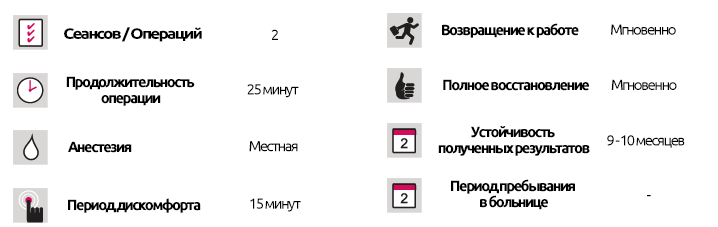

Лазерная эпиляция
Лазерная эпиляция
КРАТКОЕ ОПИСАНИЕ ЛЕЧЕНИЯ

Познакомьтесь с чудом лазерной эпиляции
Лазерная эпиляция работает с использованием фототермолиза, когда на окрашенные волосы тела воздействует особое тепло, которое накапливается в их фолликулах, разрушая их. Лазерная эпиляция позволяет получить постоянные результаты при наличии подходящих волосков на теле.
Оборудование для лазерной эпиляции, используемое в наших центрахи
В наших центрах используются диодные, александритовые и Nd: YAG лазерные системы. Они дополняют друг друга и вместе достигают максимальных результатов. Эти процедуры проводятся под наблюдением опытных дерматологов с использованием различных лазерных систем, которые эффективны для любого типа волос кожи и тела.
В наших центрах используются одобренные FDA лазерные системы Diode, Alexandrite Apogee 5500 и Nd: YAG.
Лазерная эпиляция проводится в соответствии с медицинскими требованиями. Пациентам должна предоставлятся реалистичная информация, без учета каких-либо коммерческих целей, а не устные гарантии и обещания, касающиеся определенных результатов и / или обещаний определенной даты завершения.
На что следует обратить внимание при принятии решения, где проводить лазерную эпиляцию?
Вам непременно необходимо выбрать опытный центр лазерной эпиляции, поскольку даже многие немедицинские специалисты открыли центры лазерной эпиляции исключительно для коммерческой выгоды. Эти центры стремятся максимизировать прибыль за минимально возможное время и для этого используют множество ненаучных или неэтичных методов, которые могут нанести непоправимый вред, жертвами которого стали многие ничего не подозревающие пациенты. Результаты такой практики включают только истончение, не удаление волос на теле и в некоторых случаях увеличение количества волос на теле. Наконец, растет число случаев, когда имеются результаты постоянных ожогов. В результате увеличения числа судебных дел министерство здравоохранения приняло решение утвердить лазерную эпиляцию только в крупных медицинских учреждениях, принадлежащих врачам, и в результате аннулировали лицензии многих чисто коммерческих центров.
Является ли лазерная эпиляция безболезненной?
Боль, ощущаемая всякий раз, когда лазерное тепло касается кожи, сродни резине, попавшей на кожу. Для защиты кожи используется холодный поток воздуха, что снижает уровень боли. Кроме того, это охлаждает кожу, предотвращая любой возможный вред, вызванный лазерным нагревом в верхней дерме.
Важно защитить область, на которой проводится лазерная эпиляция, от солнца как до, так и после процедуры. Эта защита особенно важна для областей, подверженных воздействию солнечного света, таких как лицо, шея, руки и кисти. В день процедуры обрабатываемую область следует очистить. После процедуры не следует принимать горячие ванны / души, а также следует избегать действий, которые могут вызвать раздражение кожи, таких как чистка. Тип ухода за кожей, который вам требуется, зависит от обрабатываемой области. Ваш врач может дать вам подробную информацию по этому вопросу.
Какой будет кожа после лазерной эпиляции?
Сразу после лазерной эпиляции могут возникнуть временные ощущения жжения и покраснения, похожие на легкий солнечный ожог, но они исчезнут через несколько часов.
Требования для проведения лазерной эпиляции
- Волосы на теле должны полностью завершить рост.
- Для тела в среднем необходимо 4-6 сеансов (с 1 сеансом каждые 2 месяца), а для более тонких волос на лице в среднем необходимо 6-12 сеансов (1 сеанс каждый месяц)
- Количество сеансов, необходимых для каждого человека, варьируется в зависимости от его типа волос на теле.
- Волосяные фоликулы, обработанные александритовой лазерной эпиляционной системой, не смогут продолжать рост.
- Лазерная эпиляция должна выполняться с соблюдением этических норм в соответствии с медицинскими фактами. Следует избегать коммерческих методов лечения, когда время между сеансами короче, чем требуется, и когда нереалистичные результаты гарантированы в устной форме.
- Сила лазерной дозы должна быть эффективной. Многие коммерческие предприятия используют низкие дозы, чтобы искусственно увеличить количество необходимых сеансов.
Может ли лазерная эпиляция нанести вред здоровью?
С медицинской точки зрения нет никакого вреда, потому что лазеры используют неионизированную энергию. Это также является признаком того, что процедура не влияет на мутацию клеток. Каждый тип лазера, используемый для эпиляции, предназначен только для волосяных фолликулов.
Каковы побочные эффекты лазерной эпиляции?
После процедуры волосяные фолликулы становятся заметными, а кожа краснеет. Это происходит после использования каждого типа лазера. Это покраснение исчезает через 1-3 часа, возможно и через 24 часа, хотя это встречается редко. Обработанный участок должен быть защищен от солнца на 7-15 дней. Перед следующим сеансом необходимо пройти не менее 3 недель после принятия солнечных ванн, в противном случае существует риск появления пятен на обработанной поверхности.
Сколько сеансов необходимо для лазерной эпиляции?
На количество необходимых сеансов влияют такие факторы, как цвет волос, толщина, часть тела и цвет кожи. Для бледных людей с густыми черными волосами будет достаточно меньше сеансов, чем для более темных людей с тонкими волосами. Для темных, густых волос, в среднем, достаточно 4-6 сеансов.
Как определяется интервалы между сессиями?
Основным фактором лазерной эпиляции является количество волос, поскольку лазерное тепло передается волосяным фолликулам через их стебли. Волосы в обработанной области выпадают в течение 15 дней после процедуры, и перед следующим сеансом ожидается рост новых волос. Этот период обычно длится около 6-8 недель, но в некоторых случаях может длиться до 10-12 недель.
Можно ли проводить лазерную эпиляцию для любого цвета кожи и типа волос?
Да! В зависимости от цвета кожи и типа волос используются различные методы и настройки лазера. При более тщательном анализе типов кожи и волос можно достичь успешных результатов. В целом, люди ошибочно полагают, что лазерная эпиляция не требует специальных знаний. Однако лазерная эпиляция - это процедура, которую необходимо выполнять под тщательным наблюдением обученного и опытного врача. Широко известно, что успешныъ результатов можно добиться только при использовании подходящего импульсного метода и правильного выбора времени, поскольку лазер, используемый на коже при лазерной эпиляции, воздействует на многие факторы, обнаруженные на коже.
Может ли лазерная эпиляция вызывать рак?
До сих пор не было никаких известных случаев рака, связанного с лазерной эпиляцией.
Какие меры предосторожности необходимо предпринять как до, так и после лазерной эпиляции?
Перед лазерной эпиляцией необходимо, чтобы те, кто обычно удаляет волосы воском, нитками или пинцетом, не делали этого по крайней мере за 15 дней до первого сеанса, хотя эти волосы могут быть выбриты. Нельзя использовать обесцвечивающие средства для волос. Перед операцией на участки, подлежащие обработке, не следует наносить макияж, а также необходимо очистить и те области, где используются дезодоранты и / или антиперсперанты.